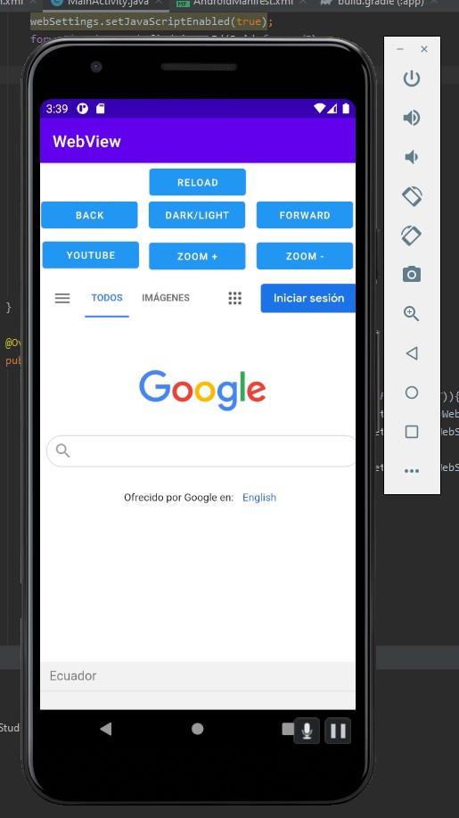

WebView
28 de Enero de 2021
La clase WebView es una extensión de la clase View de Android que te permite mostrar páginas web como parte del diseño de tu actividad. No incluye las funciones de un navegador web completamente desarrollado, como controles de navegación o una barra de direcciones. De forma predeterminada, todo lo que hace WebView es mostrar una página web.
Añadir Webview a una app de android studio
- Se inicia un proyecto en android studio con una plantilla en blanco.
-
Se agrega en el activity_main.xml el siguiente código: (esto agregara el objeto webview en nuestra app).
-
En el archivo MainActivity.java agregamos el siguiente codigo dentro del método onCreate: (esto cargará la página de google al iniciar la aplicación).
- Iniciamos la aplicación
-
Observamos que el webview se inició correctamente y cargo la url establecida anteriormente.
